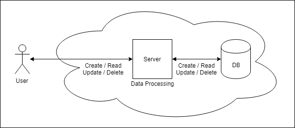

<!DOCTYPE html>
<html>
<head><meta name="generator" content="Hexo 3.8.0">
  <meta charset="utf-8">
  
  <title>CRUD表單設計 Day-01 環境建置 | Mars&#39;s Blog</title>
  <meta name="viewport" content="width=device-width, initial-scale=1, maximum-scale=1">
  <meta name="description" content="一、說明CRUD行為(新增/讀取/修改/刪除)是一切資料處理的基本行為，例如使用者上網時看到的網頁(read)，是由瀏覽器向伺服器，再向資料庫「讀取」資料而得到的，可用下圖表示：  在此以練習網頁+資料庫的CRUD行為做為程式學習入門 二、環境建置工欲善其事，必先利其器，先裝好工作環境吧….  LNMP web server Git安裝 Composer安裝 Node.js安裝 IDE&amp;amp;遠">
<meta name="keywords" content="dev,web,php,training,nginx,linux">
<meta property="og:type" content="article">
<meta property="og:title" content="CRUD表單設計 Day-01 環境建置">
<meta property="og:url" content="https://blog.mars-world.net/2019/07/20/crud-design-01/index.html">
<meta property="og:site_name" content="Mars&#39;s Blog">
<meta property="og:description" content="一、說明CRUD行為(新增/讀取/修改/刪除)是一切資料處理的基本行為，例如使用者上網時看到的網頁(read)，是由瀏覽器向伺服器，再向資料庫「讀取」資料而得到的，可用下圖表示：  在此以練習網頁+資料庫的CRUD行為做為程式學習入門 二、環境建置工欲善其事，必先利其器，先裝好工作環境吧….  LNMP web server Git安裝 Composer安裝 Node.js安裝 IDE&amp;amp;遠">
<meta property="og:locale" content="default">
<meta property="og:image" content="https://blog.mars-world.net/2019/07/20/crud-design-01/crud-client-server-database.png">
<meta property="og:image" content="https://blog.mars-world.net/2019/07/20/crud-design-01/dns-resolve.png">
<meta property="og:image" content="https://blog.mars-world.net/2019/07/20/crud-design-01/04-vscode-connect.png">
<meta property="og:image" content="https://blog.mars-world.net/2019/07/20/crud-design-01/04-vscode-open-dir.png">
<meta property="og:image" content="https://blog.mars-world.net/2019/07/20/crud-design-01/04-vscode-remote-ssh-list.png">
<meta property="og:updated_time" content="2019-08-17T14:47:45.417Z">
<meta name="twitter:card" content="summary">
<meta name="twitter:title" content="CRUD表單設計 Day-01 環境建置">
<meta name="twitter:description" content="一、說明CRUD行為(新增/讀取/修改/刪除)是一切資料處理的基本行為，例如使用者上網時看到的網頁(read)，是由瀏覽器向伺服器，再向資料庫「讀取」資料而得到的，可用下圖表示：  在此以練習網頁+資料庫的CRUD行為做為程式學習入門 二、環境建置工欲善其事，必先利其器，先裝好工作環境吧….  LNMP web server Git安裝 Composer安裝 Node.js安裝 IDE&amp;amp;遠">
<meta name="twitter:image" content="https://blog.mars-world.net/2019/07/20/crud-design-01/crud-client-server-database.png">
  
  
  
    <link href="//fonts.googleapis.com/css?family=Source+Code+Pro" rel="stylesheet" type="text/css">
  

  <link rel="stylesheet" href="https://maxcdn.bootstrapcdn.com/bootstrap/3.3.6/css/bootstrap.min.css" integrity="sha384-1q8mTJOASx8j1Au+a5WDVnPi2lkFfwwEAa8hDDdjZlpLegxhjVME1fgjWPGmkzs7" crossorigin="anonymous">

  <link rel="stylesheet" href="https://maxcdn.bootstrapcdn.com/font-awesome/4.5.0/css/font-awesome.min.css" integrity="sha384-XdYbMnZ/QjLh6iI4ogqCTaIjrFk87ip+ekIjefZch0Y+PvJ8CDYtEs1ipDmPorQ+" crossorigin="anonymous">

  <link rel="stylesheet" href="/css/styles.css">
  

</head>
</html>
<body>
  <nav class="navbar navbar-inverse">
  <div class="container">
    <!-- Brand and toggle get grouped for better mobile display -->
    <div class="navbar-header">
      <button type="button" class="navbar-toggle collapsed" data-toggle="collapse" data-target="#main-menu-navbar" aria-expanded="false">
        <span class="sr-only">Toggle navigation</span>
        <span class="icon-bar"></span>
        <span class="icon-bar"></span>
        <span class="icon-bar"></span>
      </button>
      
    </div>

    <!-- Collect the nav links, forms, and other content for toggling -->
    <div class="collapse navbar-collapse" id="main-menu-navbar">
      <ul class="nav navbar-nav">
        
          <li><a class href="/index.html">Home</a></li>
        
          <li><a class href="/archives/">Archives</a></li>
        
          <li><a class href="https://github.com/marshung24">GitHub</a></li>
        
      </ul>

      <!--
      <ul class="nav navbar-nav navbar-right">
        
      </ul>
      -->
    </div><!-- /.navbar-collapse -->
  </div><!-- /.container-fluid -->
</nav>

  <div class="container">
    <div class="blog-header">
  <h1 class="blog-title">Mars&#39;s Blog</h1>
  
    <p class="lead blog-description">Mars&#39;s learning record</p>
  
</div>

    <div class="row">
        <div class="col-sm-8 blog-main">
          <article id="post-crud-design-01" class="article article-type-post" itemscope itemprop="blogPost">

  <header class="article-header">
    
  
    <h1 class="article-title" itemprop="name">
      CRUD表單設計 Day-01 環境建置
    </h1>
  


  </header>

  <div class="article-meta">
    <div class="article-datetime">
  <a href="/2019/07/20/crud-design-01/" class="article-date"><time datetime="2019-07-20T13:17:34.000Z" itemprop="datePublished">2019-07-20</time></a>
</div>

    <div class="article-author">Mars Hung</div>
    
  <div class="article-category">
    <a class="article-category-link" href="/categories/training/">training</a>
  </div>


    <div class="article-reading">
  
  <span id="busuanzi_container_page_pv">文章閱讀量<span id="busuanzi_value_page_pv"></span>次</span>
  
</div>

  </div>
  <div class="article-inner">

    <div class="article-entry" itemprop="articleBody">
      
        
<div id="toc">
    <ol class="toc"><li class="toc-item toc-level-1"><a class="toc-link" href="#一、說明"><span class="toc-text">一、說明</span></a></li><li class="toc-item toc-level-1"><a class="toc-link" href="#二、環境建置"><span class="toc-text">二、環境建置</span></a></li><li class="toc-item toc-level-1"><a class="toc-link" href="#三、工作目錄設置"><span class="toc-text">三、工作目錄設置</span></a><ol class="toc-child"><li class="toc-item toc-level-2"><a class="toc-link" href="#3-1-建立工作目錄"><span class="toc-text">3.1 建立工作目錄</span></a></li><li class="toc-item toc-level-2"><a class="toc-link" href="#3-2-建立Nginx-Virtual-Host"><span class="toc-text">3.2 建立Nginx Virtual Host</span></a></li></ol></li><li class="toc-item toc-level-1"><a class="toc-link" href="#四、使用IDE：VSCode"><span class="toc-text">四、使用IDE：VSCode</span></a></li><li class="toc-item toc-level-1"><a class="toc-link" href="#五、培訓題目"><span class="toc-text">五、培訓題目</span></a></li></ol>
</div>

        <h1 id="一、說明"><a href="#一、說明" class="headerlink" title="一、說明"></a>一、說明</h1><p>CRUD行為(新增/讀取/修改/刪除)是一切資料處理的基本行為，例如使用者上網時看到的網頁(read)，是由瀏覽器向伺服器，再向資料庫「讀取」資料而得到的，可用下圖表示：</p>
<p></p>
<p>在此以練習網頁+資料庫的CRUD行為做為程式學習入門</p>
<h1 id="二、環境建置"><a href="#二、環境建置" class="headerlink" title="二、環境建置"></a>二、環境建置</h1><p>工欲善其事，必先利其器，先裝好工作環境吧….</p>
<ul>
<li><a href="/2019/07/19/www-server-install/">LNMP web server</a></li>
<li><a href="/2019/07/21/git-install/">Git安裝</a></li>
<li><a href="/2019/07/21/composer-install/">Composer安裝</a></li>
<li><a href="/2019/05/30/nodejs-install/">Node.js安裝</a></li>
<li><a href="/2019/05/27/vscode-remote-ssh/">IDE&amp;遠端開發環境</a></li>
<li><a href="/2019/07/24/account-security-setting/">帳號安全設定</a></li>
</ul>
<h1 id="三、工作目錄設置"><a href="#三、工作目錄設置" class="headerlink" title="三、工作目錄設置"></a>三、工作目錄設置</h1><h2 id="3-1-建立工作目錄"><a href="#3-1-建立工作目錄" class="headerlink" title="3.1 建立工作目錄"></a>3.1 建立工作目錄</h2><figure class="highlight shell"><table><tr><td class="gutter"><pre><span class="line">1</span><br><span class="line">2</span><br></pre></td><td class="code"><pre><span class="line"><span class="meta">$</span> sudo mkdir -p /var/www/html/crud-training</span><br><span class="line"><span class="meta">$</span> sudo chmod 777 /var/www/html/crud-training</span><br></pre></td></tr></table></figure>
<h2 id="3-2-建立Nginx-Virtual-Host"><a href="#3-2-建立Nginx-Virtual-Host" class="headerlink" title="3.2 建立Nginx Virtual Host"></a>3.2 建立Nginx Virtual Host</h2><ul>
<li>建立域名為 crud-training.dev.idv 的Virtual Host</li>
</ul>
<figure class="highlight shell"><table><tr><td class="gutter"><pre><span class="line">1</span><br></pre></td><td class="code"><pre><span class="line"><span class="meta">$</span> sudo vi /etc/nginx/sites-enabled/dev-web.conf</span><br></pre></td></tr></table></figure>
<ul>
<li>增加以下設定</li>
</ul>
<figure class="highlight shell"><table><tr><td class="gutter"><pre><span class="line">1</span><br><span class="line">2</span><br><span class="line">3</span><br><span class="line">4</span><br><span class="line">5</span><br><span class="line">6</span><br><span class="line">7</span><br><span class="line">8</span><br><span class="line">9</span><br><span class="line">10</span><br><span class="line">11</span><br><span class="line">12</span><br><span class="line">13</span><br><span class="line">14</span><br><span class="line">15</span><br><span class="line">16</span><br><span class="line">17</span><br><span class="line">18</span><br><span class="line">19</span><br></pre></td><td class="code"><pre><span class="line"><span class="meta">#</span> crud-training.dev.idv</span><br><span class="line">server &#123;</span><br><span class="line">        # SSL configuration</span><br><span class="line">        listen 443 ssl;</span><br><span class="line">        listen [::]:443 ssl;</span><br><span class="line"></span><br><span class="line">        root /var/www/html/crud-training;</span><br><span class="line"></span><br><span class="line">        # Add index.php to the list if you are using PHP</span><br><span class="line">        index index.php;</span><br><span class="line"></span><br><span class="line">        server_name crud-training.dev.idv;</span><br><span class="line"></span><br><span class="line">        # SSL相關設定</span><br><span class="line">        include common.conf.d/ssl.conf;</span><br><span class="line"></span><br><span class="line">        # 共用設定</span><br><span class="line">        include common.conf.d/common.conf;</span><br><span class="line">&#125;</span><br></pre></td></tr></table></figure>
<ul>
<li>重新啟動Nginx</li>
</ul>
<figure class="highlight shell"><table><tr><td class="gutter"><pre><span class="line">1</span><br></pre></td><td class="code"><pre><span class="line"><span class="meta">$</span> sudo service nginx reload</span><br></pre></td></tr></table></figure>
<ul>
<li><p>增加DNS解析 (如果DNS未支援)<br>編輯 C:\Windows\System32\drivers\etc\hosts</p>
<p></p>
</li>
<li><p>驗証是否設定完成</p>
<ul>
<li><p>建立Hello檔</p>
<figure class="highlight shell"><table><tr><td class="gutter"><pre><span class="line">1</span><br></pre></td><td class="code"><pre><span class="line"><span class="meta">$</span> echo "hello world !" | tee -a /var/www/html/crud-training/index.php</span><br></pre></td></tr></table></figure>
</li>
<li><p>前往網址查看是否有正確顯示<br><a href="https://crud-training.dev.idv/" target="_blank" rel="noopener">https://crud-training.dev.idv/</a></p>
</li>
</ul>
</li>
</ul>
<h1 id="四、使用IDE：VSCode"><a href="#四、使用IDE：VSCode" class="headerlink" title="四、使用IDE：VSCode"></a>四、使用IDE：VSCode</h1><ol>
<li><p>打開VSCode，連線至伺服器dev.idv</p>
<p></p>
</li>
<li><p>切換開發目錄</p>
<p></p>
</li>
<li><p>遠端目錄清單</p>
<p></p>
<blockquote>
<p>連線過一次後，遠端目錄就會出現在清單中</p>
</blockquote>
</li>
</ol>
<h1 id="五、培訓題目"><a href="#五、培訓題目" class="headerlink" title="五、培訓題目"></a>五、培訓題目</h1><p><a href="/2019/08/16/php-training/">PHP培訓-CRUD</a></p>
<hr>
<p><strong>未完待續：</strong> <a href="/2019/08/16/crud-design-02/">CRUD表單設計 Day-02 安裝PHP Framework</a></p>

      
    </div>

    
      

    

    <footer class="article-footer">
      <a data-url="https://blog.mars-world.net/2019/07/20/crud-design-01/" data-id="cjzgasjnq000fskuflmfot66t" class="article-share-link">
        <i class="fa fa-share"></i> Share
      </a>
      
      
  <ul class="article-tag-list"><li class="article-tag-list-item"><a class="article-tag-list-link" href="/tags/dev/">dev</a></li><li class="article-tag-list-item"><a class="article-tag-list-link" href="/tags/linux/">linux</a></li><li class="article-tag-list-item"><a class="article-tag-list-link" href="/tags/nginx/">nginx</a></li><li class="article-tag-list-item"><a class="article-tag-list-link" href="/tags/php/">php</a></li><li class="article-tag-list-item"><a class="article-tag-list-link" href="/tags/training/">training</a></li><li class="article-tag-list-item"><a class="article-tag-list-link" href="/tags/web/">web</a></li></ul>


    </footer>
  </div>
  
    
<ul id="article-nav" class="nav nav-pills nav-justified">
  
  <li role="presentation">
    <a href="/2019/07/19/www-server-install/" id="article-nav-older" class="article-nav-link-wrap">
      <i class="fa fa-chevron-left pull-left"></i>
      <span class="article-nav-link-title">Web伺服器安裝(LNMP)</span>
    </a>
  </li>
  
  
  <li role="presentation">
    <a href="/2019/07/21/git-install/" id="article-nav-newer" class="article-nav-link-wrap">
      <span class="article-nav-link-title">Git安裝</span>
      <i class="fa fa-chevron-right pull-right"></i>
    </a>
  </li>
  
</ul>


  
</article>


        </div>
        <div class="col-sm-3 col-sm-offset-1 blog-sidebar">
          
  
  <div class="sidebar-module">
    <h4>Recents</h4>
    <ul class="sidebar-module-list">
      
        <li>
          <a href="/2019/08/16/php-training/">PHP培訓-CRUD</a>
        </li>
      
        <li>
          <a href="/2019/08/16/crud-design-02/">CRUD表單設計 Day-02 安裝PHP Framework</a>
        </li>
      
        <li>
          <a href="/2019/07/24/account-security-setting/">帳號安全設定</a>
        </li>
      
        <li>
          <a href="/2019/07/21/composer-install/">Composer安裝</a>
        </li>
      
        <li>
          <a href="/2019/07/21/git-install/">Git安裝</a>
        </li>
      
    </ul>
  </div>


  
  <div class="sidebar-module">
    <h4>Archives</h4>
    <ul class="sidebar-module-list"><li class="sidebar-module-list-item"><a class="sidebar-module-list-link" href="/archives/2019/08/">August 2019</a><span class="sidebar-module-list-count">2</span></li><li class="sidebar-module-list-item"><a class="sidebar-module-list-link" href="/archives/2019/07/">July 2019</a><span class="sidebar-module-list-count">6</span></li><li class="sidebar-module-list-item"><a class="sidebar-module-list-link" href="/archives/2019/06/">June 2019</a><span class="sidebar-module-list-count">1</span></li><li class="sidebar-module-list-item"><a class="sidebar-module-list-link" href="/archives/2019/05/">May 2019</a><span class="sidebar-module-list-count">4</span></li><li class="sidebar-module-list-item"><a class="sidebar-module-list-link" href="/archives/2019/04/">April 2019</a><span class="sidebar-module-list-count">2</span></li><li class="sidebar-module-list-item"><a class="sidebar-module-list-link" href="/archives/2017/09/">September 2017</a><span class="sidebar-module-list-count">2</span></li></ul>
  </div>


  
  <div class="sidebar-module">
    <h4>Categories</h4>
    <ul class="sidebar-module-list"><li class="sidebar-module-list-item"><a class="sidebar-module-list-link" href="/categories/doc/">doc</a><span class="sidebar-module-list-count">2</span></li><li class="sidebar-module-list-item"><a class="sidebar-module-list-link" href="/categories/info/">info</a><span class="sidebar-module-list-count">3</span></li><li class="sidebar-module-list-item"><a class="sidebar-module-list-link" href="/categories/security/">security</a><span class="sidebar-module-list-count">1</span></li><li class="sidebar-module-list-item"><a class="sidebar-module-list-link" href="/categories/server/">server</a><span class="sidebar-module-list-count">1</span></li><li class="sidebar-module-list-item"><a class="sidebar-module-list-link" href="/categories/test/">test</a><span class="sidebar-module-list-count">1</span></li><li class="sidebar-module-list-item"><a class="sidebar-module-list-link" href="/categories/tools/">tools</a><span class="sidebar-module-list-count">5</span></li><li class="sidebar-module-list-item"><a class="sidebar-module-list-link" href="/categories/training/">training</a><span class="sidebar-module-list-count">3</span></li><li class="sidebar-module-list-item"><a class="sidebar-module-list-link" href="/categories/web/">web</a><span class="sidebar-module-list-count">1</span></li></ul>
  </div>


  
  <div class="sidebar-module">
    <h4>Tags</h4>
    <ul class="sidebar-module-list"><li class="sidebar-module-list-item"><a class="sidebar-module-list-link" href="/tags/account/">account</a><span class="sidebar-module-list-count">1</span></li><li class="sidebar-module-list-item"><a class="sidebar-module-list-link" href="/tags/blog/">blog</a><span class="sidebar-module-list-count">1</span></li><li class="sidebar-module-list-item"><a class="sidebar-module-list-link" href="/tags/codeingiter/">codeingiter</a><span class="sidebar-module-list-count">1</span></li><li class="sidebar-module-list-item"><a class="sidebar-module-list-link" href="/tags/coding/">coding</a><span class="sidebar-module-list-count">5</span></li><li class="sidebar-module-list-item"><a class="sidebar-module-list-link" href="/tags/composer/">composer</a><span class="sidebar-module-list-count">1</span></li><li class="sidebar-module-list-item"><a class="sidebar-module-list-link" href="/tags/debug/">debug</a><span class="sidebar-module-list-count">1</span></li><li class="sidebar-module-list-item"><a class="sidebar-module-list-link" href="/tags/dev/">dev</a><span class="sidebar-module-list-count">15</span></li><li class="sidebar-module-list-item"><a class="sidebar-module-list-link" href="/tags/doc/">doc</a><span class="sidebar-module-list-count">3</span></li><li class="sidebar-module-list-item"><a class="sidebar-module-list-link" href="/tags/env/">env</a><span class="sidebar-module-list-count">1</span></li><li class="sidebar-module-list-item"><a class="sidebar-module-list-link" href="/tags/git/">git</a><span class="sidebar-module-list-count">2</span></li><li class="sidebar-module-list-item"><a class="sidebar-module-list-link" href="/tags/github/">github</a><span class="sidebar-module-list-count">1</span></li><li class="sidebar-module-list-item"><a class="sidebar-module-list-link" href="/tags/hexo/">hexo</a><span class="sidebar-module-list-count">1</span></li><li class="sidebar-module-list-item"><a class="sidebar-module-list-link" href="/tags/ide/">ide</a><span class="sidebar-module-list-count">1</span></li><li class="sidebar-module-list-item"><a class="sidebar-module-list-link" href="/tags/info/">info</a><span class="sidebar-module-list-count">3</span></li><li class="sidebar-module-list-item"><a class="sidebar-module-list-link" href="/tags/javascript/">javascript</a><span class="sidebar-module-list-count">1</span></li><li class="sidebar-module-list-item"><a class="sidebar-module-list-link" href="/tags/linux/">linux</a><span class="sidebar-module-list-count">2</span></li><li class="sidebar-module-list-item"><a class="sidebar-module-list-link" href="/tags/mysql/">mysql</a><span class="sidebar-module-list-count">1</span></li><li class="sidebar-module-list-item"><a class="sidebar-module-list-link" href="/tags/nginx/">nginx</a><span class="sidebar-module-list-count">2</span></li><li class="sidebar-module-list-item"><a class="sidebar-module-list-link" href="/tags/nodejs/">nodejs</a><span class="sidebar-module-list-count">1</span></li><li class="sidebar-module-list-item"><a class="sidebar-module-list-link" href="/tags/php/">php</a><span class="sidebar-module-list-count">6</span></li><li class="sidebar-module-list-item"><a class="sidebar-module-list-link" href="/tags/phpunit/">phpunit</a><span class="sidebar-module-list-count">1</span></li><li class="sidebar-module-list-item"><a class="sidebar-module-list-link" href="/tags/security/">security</a><span class="sidebar-module-list-count">1</span></li><li class="sidebar-module-list-item"><a class="sidebar-module-list-link" href="/tags/server/">server</a><span class="sidebar-module-list-count">1</span></li><li class="sidebar-module-list-item"><a class="sidebar-module-list-link" href="/tags/setting/">setting</a><span class="sidebar-module-list-count">1</span></li><li class="sidebar-module-list-item"><a class="sidebar-module-list-link" href="/tags/sop/">sop</a><span class="sidebar-module-list-count">2</span></li><li class="sidebar-module-list-item"><a class="sidebar-module-list-link" href="/tags/standard/">standard</a><span class="sidebar-module-list-count">2</span></li><li class="sidebar-module-list-item"><a class="sidebar-module-list-link" href="/tags/style/">style</a><span class="sidebar-module-list-count">1</span></li><li class="sidebar-module-list-item"><a class="sidebar-module-list-link" href="/tags/test/">test</a><span class="sidebar-module-list-count">2</span></li><li class="sidebar-module-list-item"><a class="sidebar-module-list-link" href="/tags/tools/">tools</a><span class="sidebar-module-list-count">5</span></li><li class="sidebar-module-list-item"><a class="sidebar-module-list-link" href="/tags/trace/">trace</a><span class="sidebar-module-list-count">1</span></li><li class="sidebar-module-list-item"><a class="sidebar-module-list-link" href="/tags/training/">training</a><span class="sidebar-module-list-count">3</span></li><li class="sidebar-module-list-item"><a class="sidebar-module-list-link" href="/tags/unit-test/">unit test</a><span class="sidebar-module-list-count">1</span></li><li class="sidebar-module-list-item"><a class="sidebar-module-list-link" href="/tags/vscode/">vscode</a><span class="sidebar-module-list-count">1</span></li><li class="sidebar-module-list-item"><a class="sidebar-module-list-link" href="/tags/web/">web</a><span class="sidebar-module-list-count">5</span></li></ul>
  </div>


        </div>
    </div>
  </div>
  <footer class="blog-footer">
  <div class="container">
    <div id="footer-info" class="inner">
      &copy; 2019 Mars Hung Powered by <a href="http://hexo.io/" target="_blank">Hexo</a>
    </div>
  
  
    <script async src="//busuanzi.ibruce.info/busuanzi/2.3/busuanzi.pure.mini.js"></script>
    <span id="busuanzi_container_site_pv">總訪問量<span id="busuanzi_value_site_pv"></span>次</span>
    <span class="post-meta-divider">|</span>
    <span id="busuanzi_container_site_uv">訪客數<span id="busuanzi_value_site_uv"></span>人</span>
  
  </div>
</footer>

  

<script src="https://ajax.googleapis.com/ajax/libs/jquery/2.1.4/jquery.min.js" integrity="sha384-8gBf6Y4YYq7Jx97PIqmTwLPin4hxIzQw5aDmUg/DDhul9fFpbbLcLh3nTIIDJKhx" crossorigin="anonymous"></script>

<script src="https://maxcdn.bootstrapcdn.com/bootstrap/3.3.6/js/bootstrap.min.js" integrity="sha384-0mSbJDEHialfmuBBQP6A4Qrprq5OVfW37PRR3j5ELqxss1yVqOtnepnHVP9aJ7xS" crossorigin="anonymous"></script>


<script src="/js/script.js"></script>

</body>
</html>
